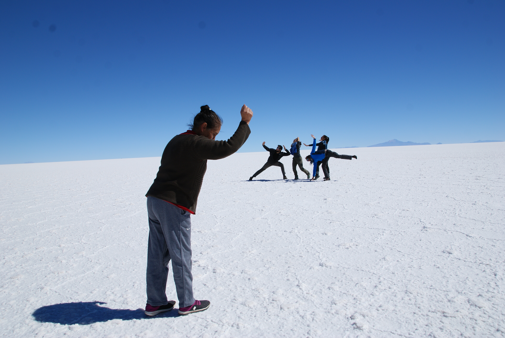
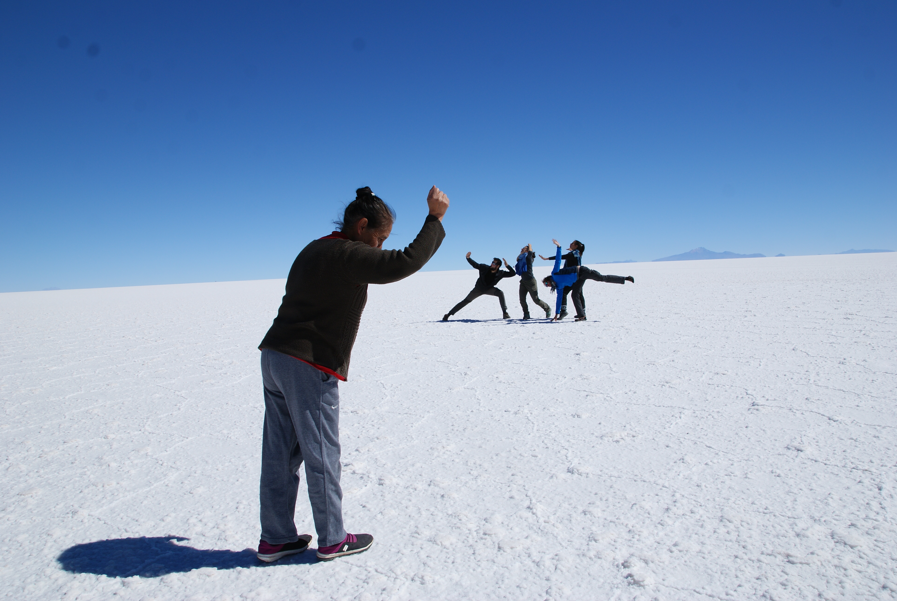

Expédition au sommet
Le Salar d'Uyuni and Co
L'arrivée en Bolivie : Tupiza
Nous sommes arrivés en Bolivie par le chemin classique depuis l'Argentine.
Salta -> Jujuy -> La Quiaca (petite dernière nuit côté argentin) -> Villazon (frontière côté bolivien) -> Tupiza
Le passage de la frontière se fait par un pont, comme au Myanmar, mais en tellement, tellement plus facile. Un mec te met un tampon de sortie sur ton passeport, te donne un papier et basta. Pourtant on avait bien vu sur les blogs qu'il fallait absolument avoir un fameux papier vert sinon les ennuis commencent à la sortie de Bolivie. Mais après avoir demandé à deux trois personnes différentes pour être sûrs, il semblerait que la loi aie changée... Espérons qu'il n'y ait pas d'embrouilles !
Le bordel bolivien fait suite à l'ordre argentin. Six mois en Asie nous ont bien formé mais quand même ! On sort de 8 semaines en Argentine et ses terminaux de bus calmes et rangés. Ici les gens crient les destinations des bus, et essaient de t'alpaguer pour te vendre un billet, un casse-croute ou une couverture. Chouette !
On arrive à Tupiza, qui est un chouette village qui nous permet un premier contact facile avec la vie bolivienne. En plus, il y a plein de randos apparement à faire autour ! Le but c'est de se caler une journée une rando, et de prospecter les différentes agences pour voir celle qui nous propose l'expédition la plus sympa pour le mythique Salar d'Uyuni !
Notre petite rando dans le canyon des Incas
En Bolivie il y a apparement beaucoup de randos qui se feraient avec guide local. Mais on a bien envie de se ballader peinards et avec le budget pour Uyuni qui se dessine, il va falloir faire des efforts !
On se trouve donc un mini bus local qui nous amène au départ du parc naturel de jenemesouviensplusdunom et on se met en marche. Le paysage est superbe : des cactus, des immenses formations rocheuses ocre, de la végétation rase. Malheureusement, la porte du diable, la principale attraction est taguée et entourée de déchets ... On se ballade, et on rencontre Tobby, un allemand en ballade qu'on croisera un paquet de fois dans le sud de la Bolivie.
On rentre ravis de notre ballade, et on s'attaque à la comparaison des itinéraires/prix/formules proposées par les différentes agences en ville. Le but : voir le moins de touristes, profiter des paysages et avoir des explications d'un guide qui s'adapte à notre niveau d'espagnol.
Une fois le choix fait, on file manger le plat de pâtes au pesto le plus dégoutant de l'histoire de la Bolivie, on empaquete et au dodo ! Demain départ tôt, l'expédition Salar nous attend !
"Expédition Salar"
Jour 1
Une première journée majoritairement en voiture ! Nous quittons l'hôtel assez tôt le matin pour rejoindre l'agence que nous avons choisie : la Torre Tour. Nous sommes à l'heure, pour une fois, mais ce n'est malheureusement pas le cas de la cuisinère, bloquée dans le trafic et des deux autres gringos qui nous accompagneront : Tajana et Maxime. Maxime fait le tour des pharmacies, car hier il a voulu sauter par dessus un cactus et s'est empalé (littéralement) l'orteil dessus. Résultat : des difficultés à marcher, une douleur au genou et des antibios. Cette boulette nous fera tous rire pendant tout le voyage. Le monde est d'ailleurs tout petit car il est ingénieur et a repris le poste téléphonique de notre ami Sébidon à GE. Tajana est croate, et est en voyage depuis un an et demi, sachant qu'elle a fait un visa vacances travail au Canada pendant un an. Elle est depuis en voyage en Amérique du sud. Nous avons également avec nous notre chauffeur-guide (claaaaaasse) Luis et de notre cuisinière, la très souriante Ilda. Voila pour la petite présentation de notre voiture qui est accompagnée d'une seconde voiture avec qui on passera notre excursion. Dedans nous avons Guillaume, un second ingénieur parisien voyageur hyper chouette qui nous donnera plein de conseils pour le Pérou, et la mifa de folie. J'ai nommé Séverine et Julien, les parents qui te font rêver du voyage en famille, et les deux supers nénéttes : Hanaé et Naïs. Ces dernières ont réussi à mettre de la pêche et de la bonne humeur dans toutes les voitures et même à dérider leur chauffeur, ce qui n'était pas gagné : bref une équipe de choc !
Après les présentations on finit par partir... et on crève avant le premier stop : une très belle vue de montagne avec des rochers de plusieurs couleurs. Les couleurs sont dûes aux minéraux dedans, et il y a dans la région une grosse exploitation de plomb, argent, souffre, cuivre ...
Pour le repas on s'arrête dans un petit village typique mais avec les autres Jeep d'autres agences, un peu trop de touristes à mon goût. Les repas d'Ilda sont un délice, et ce sera une constante pendant tout le séjour, gracias Ilda ! L'après midi on enchaine les paysages enchanteurs de montagne, et j'aurai du mal à vous les décrire mais c'est absolument sublime. On s'arrête même dans un troupeau de lamas, et c'est que du bonheur ces bêtes là ! On se rend également dans un village fantôme, ou les espagnols ont exploité les ressources minières avec de la main d'oeuvre indigène pendant des années. Ces très impressionant de voir ce village déserté et d'imaginer la vie qu'il y avait avant. Le soir, on franchit les portes du parc naturel qu'on aura le plaisir de visiter le lendemain. On est déja à 4855m d'altitude, et personelement, j'aurai beau macher des feuilles de coca toute la journée ou prendre du doliprane, le mal de crâne ne m'a pas laché des 4 jours.
Jour 2
Aujourd'hui le programme de vues splendides est chargé. Nous avons vu un lac gelé, un lac avec du détergent naturel (et donc pas de poissons), le désert de Dali (rapport à ses tableaux type les montres molles), un lac vert tous sublimes. Toujours à la même altitude, nous sommes allés nous baigner dans un bain extérieur à 35 degrés, et un peu plus haut (5000m d'altitude), nous avons vu des geysers/fumeroles. Attention ou tu mets les pieds, des touristes y sont restés !
Mais le clou de cette journée qui nous a tous laissé sans voix : la laguna colorada, ou le lac coloré. Il doit se classer dans un des plus beau site que j'ai vu de ma vie, et les photos, comme d'hab ne lui rende pas justice. Sur fond de montagnes aux couleurs variables, un grand lac rouge bordeaux dessine, avec des franges bleues et blanches et entouré d'une végétation verte pastelle rase. Si le tableau n'est déja pas assez idyllique, des lamas se balladent tranquillement autour du lac et surtout, plusieurs espèces de flamand roses colonisent le lac. C'est absolument fantastique, stupéfiant et magnifique. En plus de ça, le rouge du lac change selon le soleil...
Deuxième nuit après méditation sur ce qu'on a vu. Nous partageons cette fois-ci notre auberge avec les autres touristes en partance de Tulpiza. Un bon repas et rebelotte la nuit a plus de 4500m sous 8 couvertures.
Jour 3
Aujourd'hui il sera plutôt questions de roches. On verra un rocher en forme de coupe, appelé Copa del Mundo, un rocher en forme de dromadaire et des formations rocheuses, les Italia perdida, en rapport à des touristes italients perdus. Des lamas, des lamas et des lamas. Et le lac noir. Encore un très très beau lac, entouré d'herbe verte et de formations rocheuses ôcres.
Cette journée est aussi marquée par la découverte du canyon de l'anaconda, qui est beaucoup trop haut pour moi et duquel je me rapproche sur les fesses, très trèèèès prudemment. A la fin de la journée, petite dégustation de bières locales saveur quinoa, cactus, coca et miel. On s'en ramène pour la fin de journée, parceque ce soir, c'est fiesta, on dort dans un hôtel de sel.
Quand on arrive dans l'hôtel il est effectivement quasi entièrement construit en sel. On est solo et on a un repas de folie : de la soupe aux frites !
Jour 4
Aujourd'hui, dur dur le réveil avant l'aube. Le but : découvrir le lever du soleil sur le salar d'Uyuni, rien que ça ! Donc lever, pas de petit déj', on sangle les affaires sur le toit et c'est parti.
On roule une bonne demi heure et les premières lueurs de l'aube commencent à apparaître. Enfin on arrive à l'endroit que notre guide a décidé. C'est le Salar, mais recouvert d'une petite couche d'eau, ce qui fait que tous les reliefs se reflètent de façon parfaite. C'est splendide. Il fait par contre extrèmement froid, et il nous informe que si on veut descendre de la voiture, il faudra enlever les chaussures. Le sel et l'eau sur les chaussures ne font pas bon ménage, mais les pieds nus dans l'eau alors qu'il fait 0°, et c'est la pneumonie assurée. On reste dans la voiture, et Sylvain trouve des sacs plastiques qu'il met autour de ses baskets pour pouvoir descendre. Le soleil se lève doucement, et son reflet se dessine progressivement dans l'eau. Les couleurs sont magnifiques.
Puis on reprend la route doucement à travers le salar. Doucement car si l'eau salée peut abîmer nos chaussures, imaginez les projections sur le bas de caisse. Le premier arrêt est une île de cactus géants au milieu de ce désert de sel. On grimpe, bien entourés par pas mal de touristes mais on en profite quand même un maximum. Du haut de notre colline, le regard se perd au loin sur cette gigantesque étendue blanche. Bien évidemment, on en manque pas une pour se moquer de Max qui réessaie de faire ami-ami avec les cactus. Au retour, un petit déj de roi nous attend. Ilda a cuisiné jusque tard pour nous préparer un énorme et succulent gâteau, et il y a café, yaourt, dulce de leche, confiture, céréales : le paradis !
On fait évidemment une pause afin de faire les classiques mais efficaces photos salar. Avec la perspective, il est possible de nous faire apparaître plus grands ou plus petits pour faire des effets sympas.
Dernier arrêt sur le salar, un ex-hôtel de sel, nouveau musée, et des centaines de drapeaux de pays et autres. On se fait une petite photo classique de saut avec toute notre tribu. Puis dernier arrêt repas et on se sépare de nos amis. La dernière anecdote est une course poursuite avec un lama, qui a essayé de nous attraper Naïs et moi en nous coursant autour d'une voiture.
On saute directement dans un bus, en direction de Potosi, une ville réputée pour ses mines que nous ne souhaitons pas visiter.
Ensuite Sucre, j'ai hâte !
Maïlys
PS : Les photos de la galerie ci-dessous sont une compilation des prises de vue de toute la team Salar. Merci à eux pour ces magnifiques paysages ! Doublecliquez sur les photos pour les afficher en grand ;-)


 
<\div>

<\div>